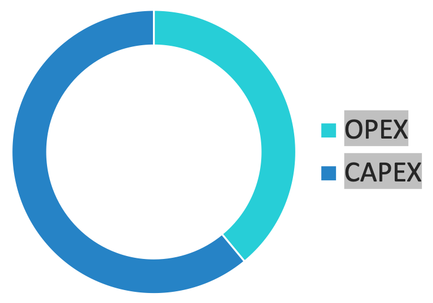
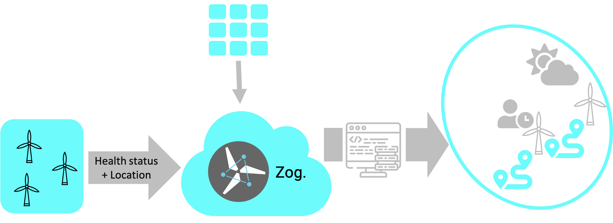

Integral role of wind energy generation
Energy industry is undergoing a major transition from fossil-based sources to renewable sources. Technology maturity, governement incentives and economies of scale enable further deployment of renewable generation. Furthermore, negative externalites in form of emissions become more integral to decision making and energy price formation. Notably, wind power has very low emissions levels (Saidur et al., 2011). Government polices have long recognized the importance of wind energy to energy transition and carbon-free economies of the future. The Renewable Energy directive sets the following goals in front of countires - EU members
- The overall EU target for Renewable Energy Sources (RES) consumption by 2030 is 32%
- Member States must require fuel suppliers to supply a minimum of 14% of the energy consumed in road and rail transport by 2030 as renewable energy.
- Greenhouse gas emissions are to be reduced by 40 per cent in 2030, relative to emissions in 1990
To achieve these goals wind energy is projected to be growing in demnad. There is more and more projects in offshore wind. Wind energy is broadly classified as either onshore or offshore. Offshore wind energy has become an increasingly attractive option due to the high energy potential associated with the vast offshore areas – winds are typically stronger and more stable at sea, resulting in significantly higher production per unit installed.

Most of the current efforts and investments in the industry are much higher in bringing down the capital costs. The total expenditure over lifetime of the turbine spent operation and maintenance is estimated in the region 25% - 39% (BVG, 2014; Christine Röckmann et al, 2017). A significant share of this spending is allocated towards life cycle management (7%), inspective and preventive maintenace (22%), corrective maintenance (35%), technical upgrades and modifications (25%). This means there is a vast space for optimization and reductions in cost.
Although offshore wind technology has many similarities with wind energy on shore, it is still considered as an immature industry. Offshore repairs are estimated to be five to ten times more expensive than onshore repairs because the former are located farther out into the sea where waters are quite deep. Offshore repairs not only need expensive crane vessels, but they are also dependent on suitable weather conditions, which extends the waiting periods for repairs. Research has shown that over the entire lifecycle of offshore wind farms, operations and maintenance (O&M) accounts for around 20-35 per cent of the total cost (Shafiee, 2015a; Ortegon et al., 2013). Additionally, due to lack of flexibility and the limited availability of wind farms, O&M planning costs are significantly higher offshore than onshore (Besnard et al., 2013; Esteban et al., 2011; Gundegjerde et al., 2015).
Product vision
Sixger, our cognitive learning-based AI solution, learns from the data record collected at the wind turbine and provides the client with critical underperformance and reveals opportunities for optimization. The final output is a proposition of a maintenance plan, re-evaluated and refined on stream. The product is conceptualized as a sublayer to an existing SCADA system. At the moment the project is in an early stage. More research and concept validation is on the way. To kick start with the prototype we seek assistance in data acquisition among stakeholders and industry partners.
The solution takes the information on the health status from the existing monitoring systems in the windfarm. Our solution uses other types of stochastic data to forecast for additional external conditions. The final priority pecking order is formed and used for formulation of the optimal route and schedule for the maintenace plan.
Our AI product unlike existing predictive maintenance solutions is a generation next solution of harnessing the power of AI to create scheduling of turbine maintenance based on farm level electricity demand, weather conditions, real-time turbine health and crew availability, while maintaining a perfect balance between overall cost and turbine downtime. Additionally, farm operators get the most out of service agreements with independent tracking of downtime and availability—unlocking new negotiating power when evaluating service providers.